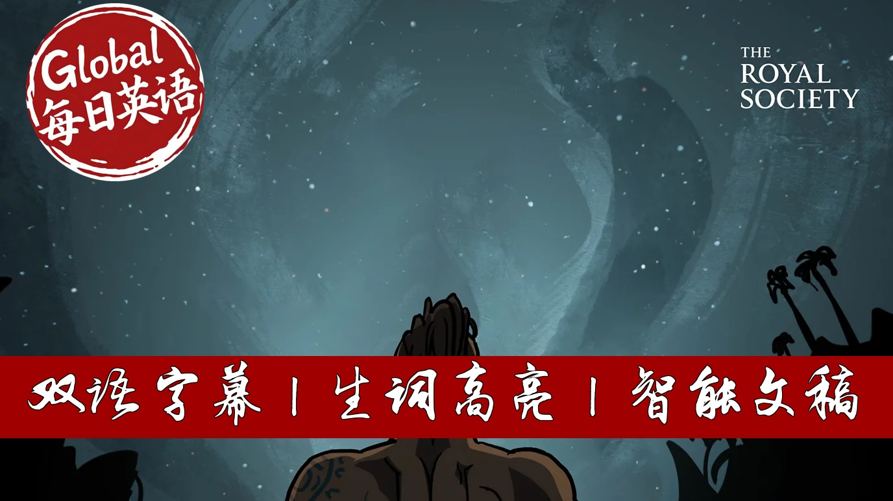

【BBC精选：观星寻路 古文明如何用夜空导航、计时与生存】
Summary: The video explores how ancient cultures across the world utilized the night sky for navigation, timekeeping, and cultural practices. It highlights Aboriginal Australians reading the Milky Way to track emu migrations, Polynesian navigators memorizing star sequences for ocean voyages, and megalithic structures like Stonehenge and New Grange aligned with solstices. The segment also touches on Peru’s solar calendar towers and concludes with concerns about modern light pollution obscuring celestial knowledge and disrupting wildlife.
摘要： 本片揭示了古文明如何运用夜空进行导航、计时和文化活动。澳大利亚原住民通过银河暗斑判断鸸鹋产卵期，波利尼西亚人依靠记忆星序横渡太平洋，巨石阵与新格朗日古墓则精准对齐冬至阳光。视频还展示了秘鲁的太阳历塔群，最后指出光污染正使人类失去星空，并危及依赖星辰导航的候鸟。

⏱️ Estimated Reading Time: 7 min.
📚 四级生词 📚 六级生词 📚 雅思生词 📚 托福生词 📚 专八生词 📚 SAT生词 📚 考研生词 📚 GRE生词
It's night time in the Australian Outback and it's dark, very dark.
But if you look up, the sky is ablaze with light.
We're looking towards the heart of the Milky Way galaxy,
a vast pinwheel of about 100 billion stars.
Can you see the emu?
Yeah, that's the one.
It's made of dark clouds of dust and gas, obscuring the lighter parts of the sky.
There are several legends about how the emu was banished to the heavens.
But in the Aboriginal nation of Wyragerie,
her position in the sky signals the time of year best for collecting emu eggs.
For most of human history, understanding the sky was not the preserve of scientists,
but a precious tool for our survival, for building cultures, religions and societies,
and in some places it still is.
This is Orion the Hunter.
You're probably familiar with his belt and sword, but if you're close to the equator,
it looks a lot more like a canoe.
A thousand years ago, the Polynesians were the most accomplished navigators in the world.
Up to the 11th century, they explored over 1,000 tiny islands scattered across the Pacific Ocean.
One of the ways they did this was by using an ingenious memory technique.
With a stone canoe built on the beach,
a training navigator would face the sea and sit in there night after night,
memorizing the rising and falling positions of the stars.
When the crew was ready to depart, they would head for a star near the horizon,
switching to a new one once the first either rose or set as it moved across the sky.
Each sailing route required a specific sequence of stars, like a password or a musical motif.
The celestial navigation, using the sun, moon and stars to work out precisely where you are in the world,
was essential to your appearance, if errors too.
But what if it wasn't a navigation tool you were after, but a way of judging time?
Some have suggested that Stonehenge in England was built
as an astronomical computer of great sophistication, capable of predicting eclipses.
This can't be proven, it's most likely to be a precise way of determining the winter solstice,
perfect for timing observances around the shortest day of the year.
Stonehenge is solstitially aligned, meaning if you're approaching the entrance from the northeast,
the sunset and midwinter will cut the monument neatly in half.
New Grange in Ireland doesn't even better job.
The 19-meter passage runs the length of a long barrow leading to a central chamber.
In the mornings around the winter solstice,
the sun shines directly in through a crack above the doorway.
New Grange was a tomb, so for the people that built it,
ancestors, death, the sun and seasonal renewal were probably linked.
Perhaps it was the job of the ancestors to turn the sun around at midwinter, guaranteeing the return of spring.
One of the most stunning examples of an ancient astronomical tool is at Chunkio in Peru.
A line of 13 towers provided a detailed solar calendar to someone viewing it from especially Bill's doorway.
People may have gathered from miles around to celebrate certain days of the year.
But with the development of complex technologies such as GPS,
most humans no longer rely on the sun, moon and stars to travel or to organize their lives.
Just as well because light pollution is increasing globally between 2 and 10% year on year,
only one in five people in Western Europe and America can now see the Milky Way.
But birds need the stars, including the North Star, to navigate.
If they can't see them due to light pollution from cities, they run into trouble.
Denying animals' access to the stars is just one of the many ways in which light pollution impacts nature,
but that's another story.
Reliance on the sky as a guiding light is not uniquely human.
But perhaps our use of the sky to find food, to organize our lives, to socialize,
to pray, was not just something we did before better technology became available.
Perhaps it was what made us who we are.